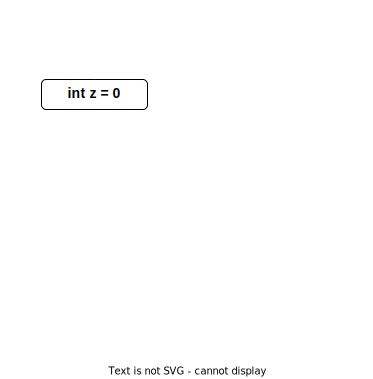
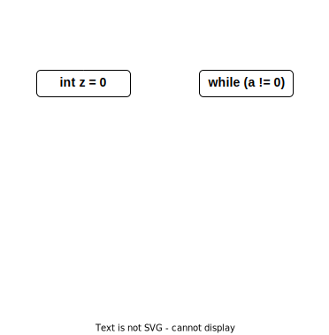
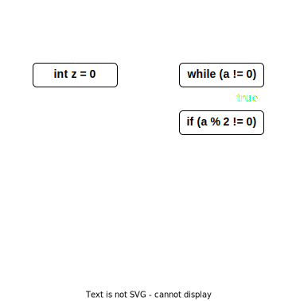
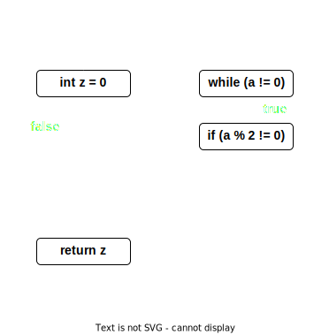
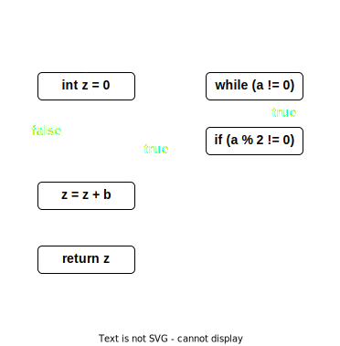
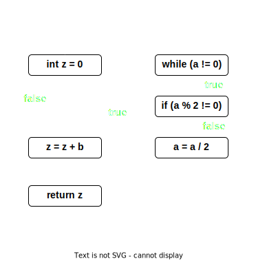
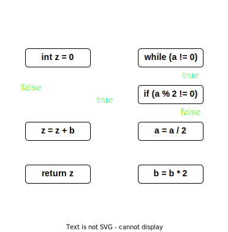
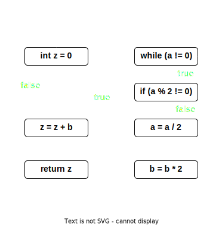
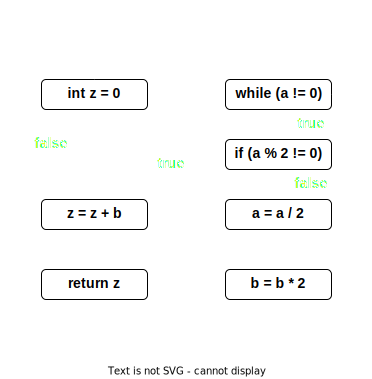

Outline
- Background
- Categories of testing
- Unit Testing
- Coverage
- System-level testing
V&V Categories
- Testing is the most common approach to V&V
- Testing is a form of dynamic V&V
- Aother alternatives exist
- Static V&V (next lecture)
- Code inspection and reviews
Background
- Testing ideas/techniques are essential knowledge for all software developers
- Many projects spend more time on testing than implementation
- Testing is the primary method in industry to evaluate software
- Huge body of knowledge
- Many different approaches (opinions)
General setup
- Usual test procedure:
- Define inputs to test
- Run test
- Analyse result
- Usually performed by test engineer
- Lots of potential for automation
Levels of testing
- Unit testing
- Integration testing
- System testing
- Acceptance testing
- Orthogonal: Regression testing
Unit testing
- Test individual software units (functions, classes, tasks, ...)
- Evaluated with respect to low-level unit design
- Should be done as early as possible
- Sometimes even before implementation => test-driven development
- Run each time a unit is modified
Integration testing
- Test software w.r.t. architectural design
- Focus on integration/interaction between different modules/units
- Normally done after unit testing
System testing
- Assess software w.r.t. system-level specification
- Sometimes by observing externally visible behaviour
- Usually quite late during development
Acceptance testing
- Test software w.r.t. user requirements
- Usually done by both the system provider and by customer
Usual setup
- Prepare: Intialize inputs
- Test: Run implementation under test (IUT)
- Analyse: Decision (oracle) wether test was successful
Test sets and test suites
- Test set is a collection of test cases for a particular unit
- Test suite is a collection of test sets (usually for a number of units)
Example
/* Unit to test */
extern void sort(int * arr, int len);
/* Test case */
bool testSort(void)
{
/* Initialization */
int a[] = { 3, -1, 5 };
/* IUT invocation */
sort(a,3);
/* Oracle */
return (a[0] <= a[1] && a[1] <= a[2]);
}
Contracts => Units
/*
* PRE: len(arr) == len
* POST: arr is sorted
*/
extern void sort(int * arr, int len);
/* Test case */
bool testSort(void)
{
/* Initialization => ensure preconditions */
int a[] = { 3, -1, 5 };
sort(a,3);
/* Oracle => verify postconditions */
return (a[0] <= a[1] && a[1] <= a[2]);
}
Oracles
- Often independent of particular test case
- Sometimes derivable (mechanically) from unit specifiction
- Oracle is essential for automation
- In practice:
- Oracle just compares unit outputs with desired (expected) outputs
Automation
- By using a tool we can run large collection of tests automatically
- Testing code sometimes integrated into actual code (documentation)
- Whenever we extend code we can rerun test suite (=> regression testing)
Test construction and coverage criteria
Construction of test suites
- Black box (Closed box) testing
- Derive tests from external descriptions
- Without knowledge of concrete implementation
- Specifications, requirements, signatures, ...
- White box (Glass box) testing
- Derive tests from source code
- Branches, conditions, statements, ...
Coverage
- Usually derive test suite to achieve certain notion of coverage
- Input space coverage
- Control-flow graph coverage
- Logic coverage
- Mutation coverage
- Sometimes required by standard
- E.g. DO-178C (avionics) requires some level of MC/DC coverage for level A certification
Input domain modelling
- Usually achieve coverage by testing different inputs
- Input domain is the set of all possible inputs to a program
- Usually large or even infinite
- Goal is to choose finitely many inputs that still represent complete input domain
Input space partitioning
- Partition input domain into regions
- Equivalence classes of values in domain w.r.t. some characteristic
- Example integer inputs
- Coverage criterion: has each region been covered by test cases?
Control-flow graph (CFG)
int f(int a, int b) {
int z = 0;
while(a != 0) {
if(a % 2 != 0) {
z = z + b;
}
a = a / 2;
b = b * 2;
}
return z;
}
Control-flow graph (CFG)
int f(int a, int b) {
int z = 0;
while(a != 0) {
if(a % 2 != 0) {
z = z + b;
}
a = a / 2;
b = b * 2;
}
return z;
}

Control-flow graph (CFG)
int f(int a, int b) {
int z = 0;
while(a != 0) {
if(a % 2 != 0) {
z = z + b;
}
a = a / 2;
b = b * 2;
}
return z;
}

Control-flow graph (CFG)
int f(int a, int b) {
int z = 0;
while(a != 0) {
if(a % 2 != 0) {
z = z + b;
}
a = a / 2;
b = b * 2;
}
return z;
}

Control-flow graph (CFG)
int f(int a, int b) {
int z = 0;
while(a != 0) {
if(a % 2 != 0) {
z = z + b;
}
a = a / 2;
b = b * 2;
}
return z;
}

Control-flow graph (CFG)
int f(int a, int b) {
int z = 0;
while(a != 0) {
if(a % 2 != 0) {
z = z + b;
}
a = a / 2;
b = b * 2;
}
return z;
}

Control-flow graph (CFG)
int f(int a, int b) {
int z = 0;
while(a != 0) {
if(a % 2 != 0) {
z = z + b;
}
a = a / 2;
b = b * 2;
}
return z;
}

Control-flow graph (CFG)
int f(int a, int b) {
int z = 0;
while(a != 0) {
if(a % 2 != 0) {
z = z + b;
}
a = a / 2;
b = b * 2;
}
return z;
}

Control-flow graph (CFG)
int f(int a, int b) {
int z = 0;
while(a != 0) {
if(a % 2 != 0) {
z = z + b;
}
a = a / 2;
b = b * 2;
}
return z;
}

Control-flow graph (CFG)
int f(int a, int b) {
int z = 0;
while(a != 0) {
if(a % 2 != 0) {
z = z + b;
}
a = a / 2;
b = b * 2;
}
return z;
}

Common notion in CFGs
- Execution path
- Path through CFG that starts at entry point
- Either at (one of) the exit point(s)
- Or is infinite
- Path condition
- Condition for an execution path p within code c such that c executes p if path condition holds
- Feasible execution path
- Execution path for which a satisfiable path condition exists
Statement coverage
- A test suite achieves statement coverage if throughout the execution of all tests every node in the CFG is executed at least once
- Often quantified: e.g. 80% statement coverage
- Can this always be achieved?
Counter example
int x;
if (x > 0)
{
int y = x;
if (y < 0)
{
printf("%d\n", y);
}
}
Branch coverage
- A test suite achieves branch coverage if throughout the execution of all tests every edge in the CFG is taken at least once
- Branch coverage subsumes statement coverage
- If a test suite achieves BC it automatically also achieves SC
Path coverage
- A test suite achieves path coverage if throughout the execution of all tests each possible path in the CFG is executed at least once
- Path coverage subsumes branch coverage
- Path coverage cannot be achieved in practice
- Number of paths is too large
- E.g. in our example we have $\approx 2^{31}$ feasible paths
- Paths might be infeasible
Decision coverage
- Decision $D(p)$ in a program p
- Set of maximum boolean expressions in p
- E.g. conditions of if, while, for, ...
- But also statements like A = (B && (x >= 0))
- Maximum in the sense that (B && (x >= 0)) is a decision, B and (x >= 0) are not
Decision coverage
- Multiple occurances of the same expression are counted as different decisions
if (x >= 0) { /* ... */ }
/* ... */
if (x >= 0) { /* ... */ }
Decision coverage
- For a given decision $d$ decision coverage is satisfied if it contains at least one test where d evaluates to true and one where d evaluates to false
- A test suite achieves decision coverage for a program $p$ if it achieves decision coverage for every decision $d$ in $D(p)$
Example - decision coverage
- int a, b, m, n, o
- bool D
- $((a < b) \lor D) \land (m >= n * o)$
- Inputs to achieve DC?
- Need 2 tests:
- (a = 5, b = 10, D = true, m = 1, n = 1, o = 1)
- (a = 10, b = 5, D = false, m = 1, n = 1, o = 1)
Condition coverage
- Conditions $C(p)$ of a program $p$ are the set of atomic boolean expressions in $p$
- E.g. in the decision $((a < b) \lor D) \land (m >= n * o)$ the conditions are $(a < b)$, $D$, and $(m >= n * o)$
- A test suite achieves condition coverage if each condition $c$ in program $p$ evaluates at least once to true and once to false
Modified condition decision coverage (MC/DC)
- For a given condition $c$ in decision $d$, MC/DC is satisfied by a test suite if it contains one test where $c$ evaluates to false, one where it evaluates to true, $d$ evaluates differently
if both cases, and all other conditions in $d$ evaluate identically in both.
- For a given program $p$, MC/DC is satisfied by a test suite if it satisfies MC/DC for all $c$ in $C(p)$
Regression testing
- Adding new features in a program or fixing a bug might introduce new bugs
- Regressions as "collateral damage"
- Regression testing is about preventing regressions
- Regression tests should be run after every change to the program
Regression testing
- Gain confidence that modification does not cause new bugs
- When do we write regression tests?
- After adding a new feature
- After fixing a bug
- For bigger projects automated regression testing tools are recommended
- Related: Continuous integration
Testing embedded systems
- ES often reactive, need stream of test inputs
- Realistic environemnt needed (or simulated)
- Important setup for embedded systems: Hardware-in-the-loop testing
- Common problems
- Simulation of environment is difficult
- What if simulation is too simplistic / not realistic?
- Often developed in high-level languages like Simulink, Modelica